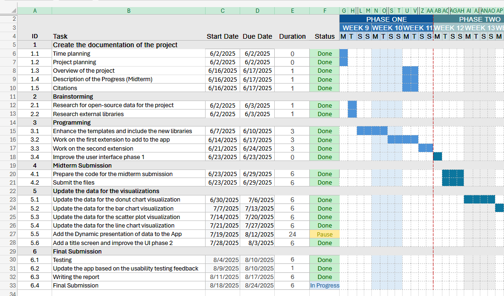
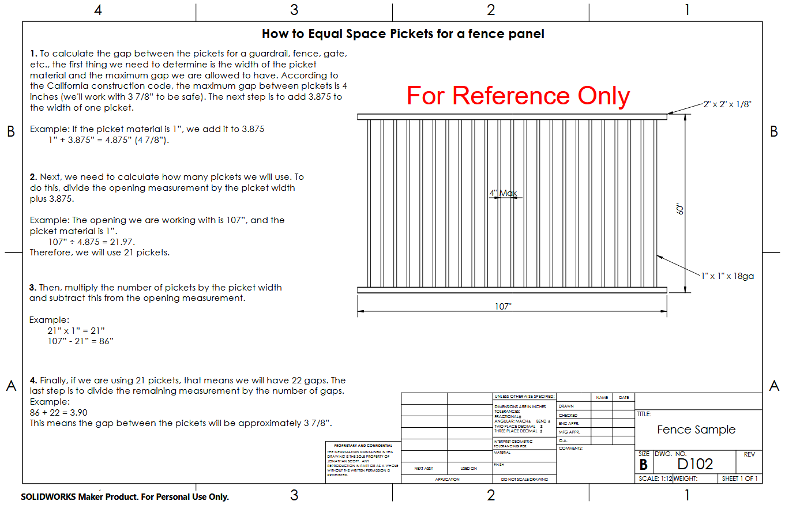

I build scalable processes for the construction industry. With an extensive
operational track record, I turn complex blueprints and logistical challenges into
streamlined, highly efficient project deliveries.
With a strong background in both residential and commercial builds, my
approach to construction management is rooted in efficiency and precision.
As a General Foreman and Project Manager, I have spent my career leading
cross-functional teams to deliver projects on time and under budget.
I specialize in turning complex blueprints into actionable, streamlined
workflows. By integrating advanced analytical methods and custom
documentation systems into daily operations, I help teams reduce
fabrication errors and eliminate logistical bottlenecks.
Currently, I am expanding my capabilities through a BSc in Computer
Science, bringing modern, data-driven decision-making and advanced
cost-tracking directly to the job site.


Education
BS in Computer Science -
University of London (Expected 2028)
Note: The documents below feature anonymized and composite data to
demonstrate system architecture while protecting past client and employer
confidentiality.
Project Charter
Defines the complete project scope, phased installation timelines,
and structural steel requirements, establishing a clear baseline
for cross-team coordination and issue resolution.
Dashboard
Custom Project Dashboard built to centralize document navigation, ensuring
all stakeholders have real-time access to progress reports, tracking, and
inspection data.
Visualizations
Translating complex spreadsheet data into actionable visual insights to monitor
timeline adherence and precise labor distribution.
Advanced Data & Analytics
Thrust Insights
A deep dive into SpaceX Falcon 9 launch telemetry to analyze the cost efficiency
of booster reusability and model predictive financial outcomes.
An interactive data dashboard that translates complex datasets into a comprehensive suite of
actionable formats, including geospatial maps, distribution charts, and trend lines to support
high level project analysis and resource allocation